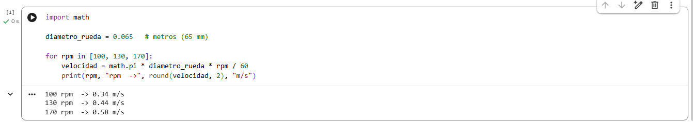

Prototipo P03 · Avance 1 · Google Colab
¿Qué tan rápido va el robot? Antes de comprar
Cada vuelta de la rueda avanza 20,4 cm. El motor dice cuántas vueltas da por minuto. Multiplicamos y sale la velocidad.
Los tres motores contra la meta
La franja violeta es la velocidad que pide el requisito RNF-03: entre 0,35 y 0,6 m/s.
Lo que descubrimos
El número del fabricante es con 12 V y el motor sin peso. En el robot al motor le llegan unos 9 V (la batería da 11 V y el L298N se come 2 V) y además carga el peso del robot. Por eso va más lento.
Con 130 rpm el robot quedaría en 0,27 m/s, por debajo de la meta. Con 170 rpm queda justo en 0,35 m/s. Un motor rápido se puede frenar con el código (PWM); uno lento no se puede acelerar.
Las ideas clave
La rueda es una regla
En una vuelta la rueda avanza lo que mide su borde: pi por el diámetro.
3,14 × 65 mm = 20,4 cmrpm = vueltas por minuto
Se divide entre 60 para saber cuántas vueltas da en un segundo.
130 rpm ÷ 60 = 2,2 vueltas/sEl papel es optimista
Menos voltios y más peso hacen que el motor gire más lento de lo que dice la caja.
× 9/12 × 0,8 ≈ 60 %Comparación rápida
Con el TB6612FNG se pierde menos voltaje (al motor llegan unos 10,6 V).
| Motor | Papel | Robot con L298N | Robot con TB6612FNG |
|---|---|---|---|
| 100 rpm | 0,34 | 0,20 ✗ | 0,24 ✗ |
| 130 rpm | 0,44 | 0,27 ✗ | 0,31 casi |
| 170 rpm | 0,58 | 0,35 justo | 0,41 ✓ |
Todo en m/s. Son estimados: el 80 % por peso es un supuesto que se confirma midiendo con el encoder en P03.
Evidencia
Primera celda corrida en Google Colab el 11 de noviembre de 2026.

Ver el código (2 celdas)
import math
# Celda 1: en el papel (12 V, sin peso)
diametro_rueda = 0.065 # metros (65 mm)
for rpm in [100, 130, 170]:
velocidad = math.pi * diametro_rueda * rpm / 60
print(rpm, "rpm ->", round(velocidad, 2), "m/s")
# Celda 2: estimado en el robot
voltaje_motor = 9 # con L298N
voltaje_nominal = 12
por_peso = 0.8
for rpm in [100, 130, 170]:
papel = math.pi * diametro_rueda * rpm / 60
robot = papel * (voltaje_motor / voltaje_nominal) * por_peso
print(rpm, "rpm ->", round(robot, 2), "m/s en el robot")
Archivo: velocidad.py
Qué sigue
Recomendado: 170 rpm.
Ahí se reemplaza el 80 % supuesto por el valor medido.